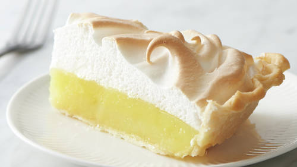

Lemon Meringue Pie

How To Make Easy Lemon Meringue Pie
Ingrediants
- 1 can sweetened condensed milk
- 3 eggs, separated
- 1/4 cup lemon juice
- 1 pie crust shell
- 1/4 cup sugar
- 1 tsp vanilla extract
Directions
- Preheat Oven to 375. Prick thawed pie shell with fork, lightly. Bake for 10 minutes or until light golden. Remove from oven, let cool while you mix ingredients.
- In a regular bowl, mix sweetened condensed milk and lemon juice. Slowly add egg yolks, reserving whites, one at a time, mixing thoroughly. Lemon juice, "cooks" the eggs, at least that is what I am told. Pour into cooled pie shell.
- In a regular bowl, add egg whites. Beat with mixture until soft peaks form. Add sugar and vanilla. Beat until stiff peaks form. Pour on top of pie, Using a Spatula or Spoon,make peaks and swirls. Whatever looks pretty. Bake in oven until Meringue peaks are a light brown and set. Cool completely before serving.